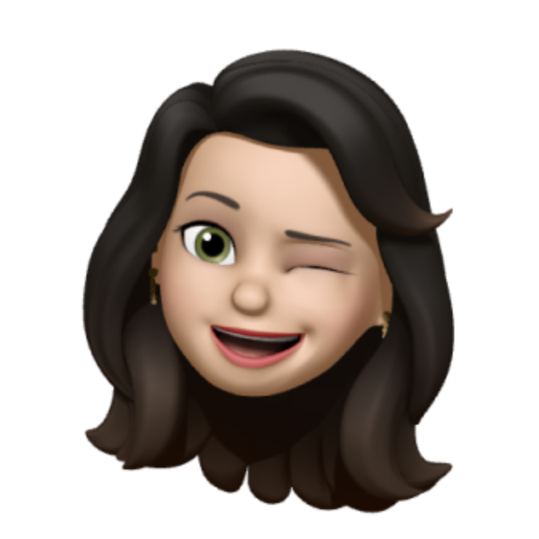

About Me

大家好，我是佳穎，目前人在雪梨當咖啡師。過去有商業設計的背景，但工作沒幾年就被低薪和壓榨嚇跑了，也沒有這麼誇張但半個事實，一直想去國外生活看看，看自己的能耐到哪、英文多差，只能說要面對的挑戰比低薪和壓榨還多更多，但我覺得長成了一個我以前想像不到的人。以前從沒想過要當工程師，但因為後來接觸的人事物，讓我覺得這或許會是一個可以走長走廣的路，主要是我想像它可以帶給我很多的可能和想像。如果不是請打發我。
Q1:為了成為軟體工程師，做過什麼努力？若有具體作品請分享給我們。
之前有在w3schools自學一些基本的程式碼，也追蹤一些與科技產業相關的帳號，從他們分享的資訊去慢慢了解這個產業。未來希望成為不只會寫程式的工程師，更有足夠的軟實力去推銷自己，只能說經常在工作上，有這項技能實在是太重要和關鍵。如果兩方面夠強的話，搭配起來我覺得應該會不錯。
Q2: 如果參與這個訓練，會怎麼安排學習時間？
目前還不清楚課業的輕重，以及自己的適應程度，會視情況安排。目前就是盡量多學多做，AI的幫助不少。
Q3: 是否有想要加入的公司？為什麼想加入該公司？
其實沒有特別想要加入哪個公司，但我覺得公司文化對我來說很重要，一個公司是否視員工為重要資產。舉個例，前陣子去Salesforce 的辦公室，牆上掛的畫全是員工們的合照，沒有傳統上大公司擺上美但很有距離感的藝術作品，我想他們想表達的是：他們重視團隊和員工。雖然不知道事實是如何，但我對他們的第一印象就和對其他公司的區分開來。
Q4: 請描述一件產生明顯負面情緒的經歷，如何處理該情緒？
工作上，很多負面的情緒是要立刻面對它並反應、轉換情緒的，先不管是誰對錯，我盡量不讓負面的情緒佔據腦海太久，因為對我沒有幫助，也會影響表現。雖然要慢慢花時間調適或適應，但調適一段時間後，反應會變快，情緒轉換上也會越來越順手。只能說這是一種藝術，每個人的方法也都不同。有的人天生得心應手，我天生脾氣不好。
Q5: 關於這份申請網頁，分享一個開發時的技術心得。
我借助AI的幫助，很快就進入狀況，但也花了很多時間去了解它寫出來給我的程式碼代表什麼，算是邊讀邊做，資訊很多要慢慢理清，也不知道自己做得對不對，但我想，學新的東西就是這樣，先來個大雜燴再慢慢用自己的思維邏輯分類，最後就是利用這些知識去廣泛應用。
Q6: 請用簡短兩三句話，描述對你而言，最重要的一項人際交往原則。
開放的心胸，尊重個人原則不越界，相互支持請教。
Q7: 其他想要對我們說的事情？
我是第一次申請，因為哥哥有追蹤你們頻道，所以推薦給我，他目前也在唸IT學位，感覺很操像在當兵。感謝你們用額外的時間幫助想要改變的人，台灣有你們很幸運，希望有更多優秀的台灣人被國際看見，未來有機會的話，也希望能為wehelp盡一份力。